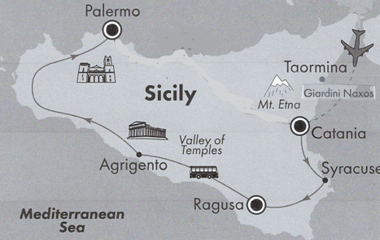
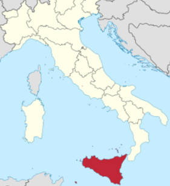

Trip Overview
Tour the old city of Palermo in Sicily with its incredible mix of architectural styles, discover Agrigento’s valley of the Temples – the best-preserved outside of Greece, ascend the lava-crusted slopes of Mt. Etna – the most active volcano in the world, visit the Norman Cathedral in Monreale with its interior of glittering 12th century Byzantine mosaics, visit the Greek Theater in Taormina - one of the largest in Sicily, view the Roman Villa del Casale in Piazza Armerina - a UNESCO World Heritage Site, and much more...


Additionally, enjoy two days in Sorrento, drive the spectacular Amalfi Coast, tour Pompeii, and spend time in Rome.
Day 1 — Thursday, October 1, 2026
Flights
- Depart Raleigh-Durham (RDU)/Richmond (RIC)
- Connect in Philadelphia
- 4:55 PM – Depart Philadelphia for Rome on American Airlines Flight 718
Day 2 — Friday, October 2
Activities
- 7:05 AM – Arrive Rome
- Panoramic city tour of Rome
- Check in to hotel
Day 3 — Saturday, October 3
Activities
- 11:00 AM Tour - Rome: Colosseum Arena Floor, Roman Forum & Palatine (15 persons max)
- Colosseum, Piazza del Colosseo
- Roman Forum/li>
- Palatine Hill, Via di San Gregorio
- Capitoline Hill, Roma, RM
- Campidoglio, Piazza del Campidoglio
Day 4 — Sunday, October 4, 2026
Activities
- Depart Rome for Catania, Sicily.
- Arrive in Catania.
- Visit the lava-crusted slopes of Mt. Etna, Europe's most active volcano. 📍 Mt. Etna Map
- Ascend to the Silvestri Craters.
- Learn about the volcano's geology and its impact on Sicily.
- Check into the hotel in the late afternoon.
Plaza Hotel Catania
Catania, Sicily
Phone: +39 095 873 7040
www.plazahotelcatania.it
Day 5 — Monday, October 5
Activities
- Travel to the beautiful hill town of Taormina.
- Walking tour through the historic center.
- Visit the famous Greek Theater overlooking the sea and Mt. Etna.
- Free time to explore shops, cafés, and scenic overlooks.
Plaza Hotel Catania
Catania, Sicily
Phone: +39 095 873 7040
www.plazahotelcatania.it
Day 6 — Tuesday, October 6
Activities
- Depart for Syracuse.
- Visit Neapolis Archaeological Park.
- Explore the Greek Theater.
- See the Roman Amphitheater.
- Visit the famous Ear of Dionysus cave.
- Walk through Ortygia, a UNESCO World Heritage Site.
- Continue to Ragusa/Ebla.
De Stefano Palace Hotel
Ragusa, Sicily
Phone: +39 0932 682872
www.destefanopalacehotel.com
Day 7 — Wednesday, October 7
Activities
- Depart Ragusa for Agrigento.
- Stop at Piazza Armerina.
- Tour the magnificent Roman Villa del Casale.
- View some of the world's finest preserved Roman mosaics.
- Continue to Agrigento.
Day 8 — Thursday, October 8, 2026
Activities
- Morning tour of Agrigento.
- Visit the spectacular Valley of the Temples.
- See some of the finest-preserved Greek temples outside mainland Greece.
- Travel to Palermo in the afternoon.
Hotel President
Palermo, Sicily
Phone: +39 091 580733
www.presidenthotelpalermo.it
Day 9 — Friday, October 9
Activities
- Travel to the hill town of Monreale.
- Tour the magnificent Norman Cathedral.
- Admire the glittering 12th-century Byzantine mosaics.
- Return to Palermo.
- Guided tour of Palermo's Old City.
- Free afternoon to explore markets, cafés, and historic streets.
Hotel President
Palermo, Sicily
Phone: +39 091 580733
www.presidenthotelpalermo.it
Day 10 — Saturday, October 10
Activities
- Morning departure from Palermo.
- Fly to Naples.
- Guided visit to the ancient city of Pompeii. 📍 Pompeii
- Continue to beautiful Sorrento.
Grand Hotel Vesuvio
Sorrento, Italy
Phone: +39 081 8782645
www.vesuviosorrento.com
Day 11 — Sunday, October 11
Activities
- Morning excursion along the spectacular Amalfi Coast.
- Enjoy breathtaking coastal scenery.
- Return to Sorrento.
- Free afternoon to explore the town.
Grand Hotel Vesuvio
Sorrento, Italy
Phone: +39 081 8782645
www.vesuviosorrento.com
Day 12 — Monday, October 12
After the guided tour, you'll spend several days exploring Rome independently while staying on Via Giulia.
Activities
- Travel by train to Via Giulia, 105, Lazio 00186 Italy
- Vatican Museums, Città del Vaticano
- Sistine Chapel, Città del Vaticano
- St Peter's Square
- St Peter's Basilica, Piazza San Pietro, Città del Vaticano
AirBnb
Via Giulia, 105, Lazio 00186, Rome 📍 Open in Google MapsDay 13 — Tuesday, October 13
Activities
- Piazza Navona
- Pantheon, Piazza della Rotonda
- Campo de' Fiori, Piazza Campo de' Fiori
- Trevi Fountain, Piazza di Trevi
- Spanish Steps, Piazza di Spagna
AirBnb
Via Giulia, 105, Lazio 00186, Rome 📍 Open in Google MapsDay 14 — Wednesday, October 14
Activities
- Santa Maria in Trastevere, Piazza di Santa Maria in Trastevere
- Ponte Fabricio, Ponte Fabricio
- Portico d'Ottavia, Via del Portico d'Ottavia
- Great Synagogue of Rome, Lungotevere de' Cenci
AirBnb
Via Giulia, 105, Lazio 00186, Rome 📍 Open in Google MapsDay 15 — Thursday, October 15
Activities
- Quirinal Palace, Piazza del Quirinale
- San Carlo alle Quattro Fontane, Via del Quirinale
- Palazzo Colonna Museo e Pinacoteca, Via della Pilotta
- Via del Corso
AirBnb
Via Giulia, 105, Lazio 00186, Rome 📍 Open in Google MapsDay 16 — Friday, October 16
Activities
- Depart Rome for Philadelphia on flight xxxx